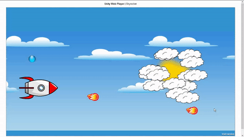

An Arcade Shooter Game
Skyrocket is an arcade shooter game developed in Unity3D for Windows OS and the Web. While playing Batman Arkham City on the PS3, I discovered that the game was made in Unreal Engine 3. Out of curiosity, I started searching on game engines and tried to learn the basic aspects of game development. I was impressed with Unity 3D and thought about making a simple game in it.
Initial idea was to create an endless shooter game. I decided to design all the assets myself and thought about making an arcade shooter which would also have some retro background music. After getting to know Unity 3D and all its components I started writing the game in C#. During the development of the game, I learned about game sprites, parallax mapping, particle physics, smoke effects and prefabs in unity. Thus, Skyrocket helped me understand game development and also brush up my photoshop skills as I learned to create 2D game assets from scratch.
In the end, the game turned out to be pretty decent. Although I had difficulties porting it to android, the game can be played on Windows OS and on modern web browsers.
Check out the gameplay below or try the game yourself.
Play SkyrocketSkyrocket Gameplay
